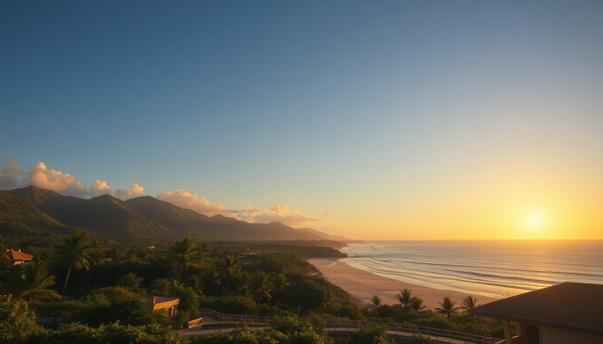

Where to Stay in Tulum: Best Areas for Every Budget

I spent three weeks in Tulum last winter, bouncing between four different neighborhoods to figure out which area actually works for different budgets. The short version: Tulum’s sprawl is real, and picking the wrong zone can leave you stuck in traffic or paying resort prices for a room without AC. Here’s where you should base yourself.
Should you stay in the Hotel Zone (Zona Hotelera)?
The Hotel Zone is the beachfront strip north of the ruins. It’s where you go if you want sand within 50 steps of your room and don’t mind paying for it. We stayed at Casa Malca for two nights—the former Pablo Escobar mansion turned boutique hotel—and the beach access was incredible, but the room felt overpriced at $450/night for a standard double.
- Best for: Beach lovers who want walkable access to the water and don’t need nightlife.
- Budget range: $200–$800+ per night. Mid-range options like La Zebra start around $250.
- Reality check: The road through the Hotel Zone is unpaved and dusty. Expect to take taxis or rent a bike to get anywhere outside your hotel. Restaurants like Hartwood are here but require a reservation weeks ahead.
- Our pick: If you can swing it, Hotel Bardo offers a quieter vibe with a lagoon-style pool that beats the crowded beach.
Is La Veleta the best budget-friendly option?
Yes, if you’re okay being 15 minutes from the beach by taxi. La Veleta is a residential neighborhood on the east side of the highway, full of new condo developments and casual eateries. We rented an Airbnb here for $80/night—a one-bedroom with a plunge pool and rooftop terrace. The trade-off is noise: construction is constant, and roosters start at 5 AM.
- Best for: Digital nomads, couples, and anyone who wants a kitchen and lower prices.
- Budget range: $50–$150/night for private rentals. Hotels like Casa Violeta are scarce but solid.
- Food worth seeking out: Burrito Amor for massive, cheap burritos ($8) and La Malquerida for mezcal and tacos.
- Our pick: The Selina Tulum co-living space in La Veleta is decent for solo travelers wanting a social scene without the beach markup.
What about Aldea Zama for a middle-ground stay?
Aldea Zama sits between the Hotel Zone and the highway, a planned community with paved roads, sidewalks, and a fraction of the dust. It’s the most practical base for first-timers who want proximity to both the beach and the town. We stayed at Hotel Alaya here—$160/night for a clean room with a pool, and we could walk to the beach in 10 minutes.
- Best for: Families and travelers who want a balance of convenience and cost.
- Budget range: $100–$250/night. Kanan Tulum is a newer boutique option around $200.
- Eats and drinks: Cenote Calavera is a 5-minute drive for a refreshing swim. Matcha Mama serves decent acai bowls for breakfast.
- Our pick: Aldea Zama is the only area where a bike actually works as primary transport—you can reach the beach, Pueblo, and the cenotes without a rental car.
Should you stay in Tulum Pueblo (the town)?
Tulum Pueblo is the original downtown, a grid of streets with taco stands, souvenir shops, and hostels. It’s the cheapest option, but it’s also the loudest and farthest from the beach (20 minutes by taxi, $5–$8). We stayed at Hotel Teetotum for $60/night—spartan but clean, with a rooftop bar that got rowdy until midnight.
- Best for: Backpackers, budget travelers, and anyone who wants to eat street food without markup.
- Budget range: $20–$100/night. Hostels like Che Tulum are under $20 for a dorm.
- Food highlights: Taquería Honorio for al pastor tacos ($1 each) and El Camello Jr. for seafood.
- Reality check: Pueblo has limited cenote access and zero beach. You’ll spend on taxis daily. Also, power outages are common in the rainy season.
Is the “Beach Road” (Carretera Tulum-Boca Paila) worth it for luxury?
This is the stretch south of the ruins, where eco-lodges and high-end resorts line the coast. We splurged on one night at Azulik—$600 for a room with no electricity (it’s an eco-resort) and a mosquito net. Stunning views, but you’re isolated. Restaurants like Kitchen Table require a taxi or a long walk.
- Best for: Honeymooners and luxury seekers who want privacy and don’t mind paying for seclusion.
- Budget range: $300–$1,200/night. Be Tulum is a more accessible option around $350.
- What to know: The road is unpaved and potholed. A rental car with 4WD helps, but most people rely on hotel shuttles.
- Our pick: Coco Tulum offers mid-range bungalows ($200/night) with direct beach access that feels less pretentious than Azulik.
FAQ
Is it safe to walk around Tulum at night? Generally yes in well-lit areas like Aldea Zama and the Hotel Zone, but avoid walking alone on the beach road after dark. In Pueblo, stick to the main streets. We never felt unsafe, but we always took taxis after 10 PM—they’re cheap and plentiful.
Do I need a rental car in Tulum? Not if you stay in Aldea Zama or the Hotel Zone and use bikes or taxis. A rental car makes sense for exploring cenotes (like Gran Cenote and Cenote Dos Ojos) but parking is a hassle in Pueblo. We rented a scooter for $30/day and it was perfect.
Which area has the best cenote access? La Veleta and Aldea Zama are closest to cenotes like Cenote Calavera and Cenote Escondido. The Hotel Zone has no cenotes within walking distance—you’ll need transport.
Conclusion
- For beach lovers with money: Hotel Zone or Beach Road—book Casa Malca or Coco Tulum.
- For budget travelers: La Veleta or Pueblo—Selina Tulum or Hotel Teetotum work well.
- For first-timers wanting balance: Aldea Zama—Hotel Alaya is our top pick.
- For luxury seclusion: Beach Road—Azulik is iconic but prepare for no AC.
- Don’t overthink it: Aldea Zama is the safest bet for most budgets. You can bike to the beach, eat in Pueblo, and avoid the traffic headache.